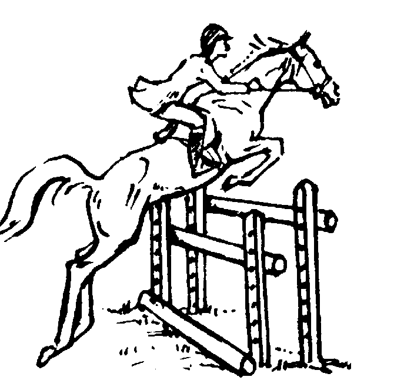
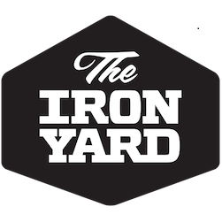

The Iron Yard
Graduated from an intensive 13-week coding school.
alisonmllr20@gmail.com | 585-489-7591
Recent projects
goLocal
A social application that allows users to search and share local farms and produce stands.
Primary technologies
- Backbone.js
- HTML
- CSS
- Parse
Other tools
Github, jQuery, Underscore.js, Yeoman, Sass, Chosen, Isotope, Moment.js, Google Maps API and Mapbox API.merge
A single, responsive Web page developed for merge, a digital strategy agency.
Primary technologies
- HTML
- CSS
Other tools
Github, light PHP programming and Adobe Illustrator.MANAGEit
A simple to-do list application that allows users to edit tasks, delete tasks and mark as complete.
Primary technologies
- Javascript
- HTML
- CSS
- Parse
Other tools
Github, jQuery, Bootstrap, Mocha and Yeoman.About me
I started my career in journalism. As newspapers began focusing more and more on digital products, my interest in technology grew. Most recently, I served as Digital Content Editor for a business publication. I decided to officially make a career switch and attend The Iron Yard Academy in summer 2013, an intensive, 13-week coding school. There, I learned the ins and outs of front-end engineering. View my complete resume.

Sept. 2006-March 2008
Twisted Tree Farm
Assistant Trainer for a competitive horse training facility.
2006
2007
2008
2009
2010
2011
2012
2013

Aug. 2006-Dec. 2009
Arizona State University
Earned bachelor's degree in journalism and mass communication.

Let's connect
I am currently looking for an exciting opportunity to continue developing my front-end engineering skills. I'm willing to relocate for the right position.
Shoot me an email at alisonmllr20@gmail.com and let's chat!
You can also find me online.